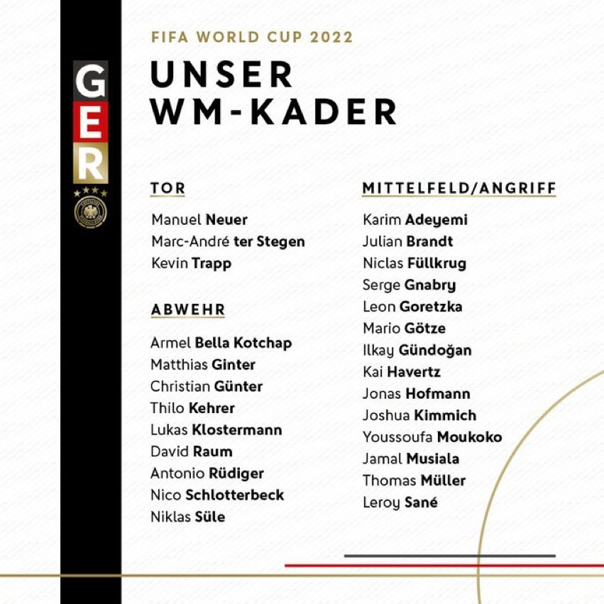
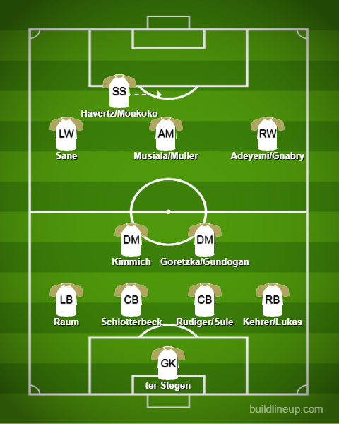

Squad Reaction - Germany

Left: Goalkeepers, Defenders Right: Midfielders/Attackers
Germany will most definitely be missing the likes of Kroos(Retired from international duty), Reus(Injured. Can’t catch a break) and Werner(Injured. He was in good form too). This is going to be a big tournament for the likes of Bella Kotchap(Having a good season for Southampton), Schlotterbeck(Doing well for Dortmund), Raum(Young and a decent LB), Moukoko(Amazing season for him Dortmund. Contract expiring in the summer), Musiala(Worth 100 million Euros), Adeyemi(Ok start I’d say for Dortmund). It is going to be a toss-up between ter Stegen and Neuer with both being in decent form but with a little bias, I may go for ter Stegen. In defense, the fullbacks are mostly going to be Raum and Kehrer(He is a CB but plays at RB for West Ham as well) on the left and right respectively. In the center, I would trust Schlotterbeck and maybe Rudiger ahead of Sule depending on the opponent(Sule for aerial presence and Rudiger normally). In midfield, the pivot will mostly consist of Kimmich and you can go with either Goretzka or Gundogan. Moving forward, Sane is a reliable LW to have. In the center, I would most definitely trust Musiala who is in amazing form for Bayern and very versatile. On the right, Gnabry is one I would rather play although there are options in Adeyemi and Hofmann. Up front is the really tough choice. Do you trust a young Moukoko to lead the line or go with a false 9-like player in Havertz or Muller? It will be interesting to see how the coach will do it.
The lineup:
